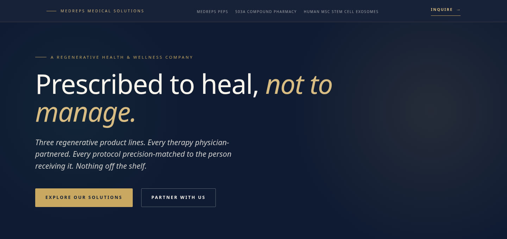
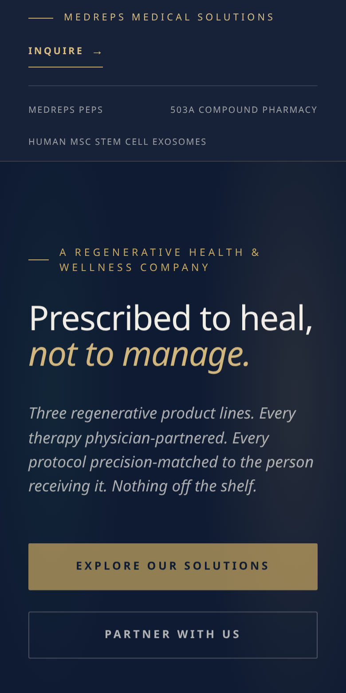

Selected Work / Case Study № 05
regenerative health · custom website
MedReps Medical Solutions · medrepsrx.com
Prescribed to heal, not to manage.
Three regenerative product lines. Every therapy physician-partnered. Every protocol precision-matched to the person receiving it. Nothing off the shelf.

The Brief
Not anti-medicine. Anti-mass-market.
MedReps was built on a conviction: patients deserve treatments that help them heal — not medications designed to manage a symptom for life while creating new ones.
The work grid labels this project MedRepsRx. The live title is MedReps Medical Solutions.
02 — Identity
Tokens from the stylesheet
Swatches are the :root tokens on the live stylesheet (--navy, --gold, --cream, --ink). The page data-theme attribute is light. DaisyUI default purple and pink values appear earlier in the file and are not the :root set shown here.
Color
Navy
--navy#1a2b4a
Navy deep
--navy-deep#0f1b33
Gold
--gold#c9a961
Gold soft
--gold-soft#d9bd82
Emerald
--emerald#2f7f5b
Cream
--cream#faf6ee
Ink
--ink#141414
Type
Aa Bb
ABCDEFGHIJKLMNOPQRSTUVWXYZ · abcdefghijklmnopqrstuvwxyz · 0123456789
Fraunces · --serif on the live stylesheet
Aa Bb
ABCDEFGHIJKLMNOPQRSTUVWXYZ · abcdefghijklmnopqrstuvwxyz · 0123456789
Inter Tight · --sans on the live stylesheet
Logo
Logo pending — content needed
No logo file was found on the live site or a review prototype. A wordmark was not drawn for this page.

Screenshot pending — content needed
A second mobile screen was not in the prototype files or this repo. The Hive study shows two phones. This page has the one homepage capture stored for the work grid.
03 — Mobile
Homepage on a phone
The phone frame is the homepage screenshot stored with this work page.
Results pending — content needed
No load time or before-and-after figure is in a project guide or scope file. Numbers that appear above are lines printed on the live homepage, not a measured outcome of this page. The homepage also prints product figures, including 20 billion exosomes per mL. They are not repeated here as results.
04 — In Detail
Lines from the live homepage
Screenshot pending — content needed
Section crops were not in the source files. The three notes below are homepage lines, not separate screenshots.
Homepage
MedReps Peps
A curated Professional Use Only peptide catalog — not research-chemical grade — accessible only after a health intake and medical clearance by a licensed provider.
Homepage
503a Pharmacy Network
MedReps providers gain access to one of the country's most extensive 503a peptide formularies through our vetted pharmacy network — physician-prescribed, patient-specific, compounded by licensed pharmacists, and reachable in all 50 states.
Homepage
Human MSC Stem Cell Exosomes
A physician-directed regenerative line sourced from whole human umbilical cord tissue in a native liquid formulation. Manufactured to ISO-5 cGMP standards for providers working in orthopedics, sports medicine, neurology, autoimmune, and aesthetics.
Quote pending — content needed
No named quote or testimonial was copied. Homepage review counts, where the site prints them, stay in the brief as the site's own line.
05 — The long scroll
Homepage viewport
The image is the homepage capture already in this repo. It is the top of the page, not a stitched full-page scroll.
Screenshot pending — content needed
A full-page scroll capture is not in the source files.